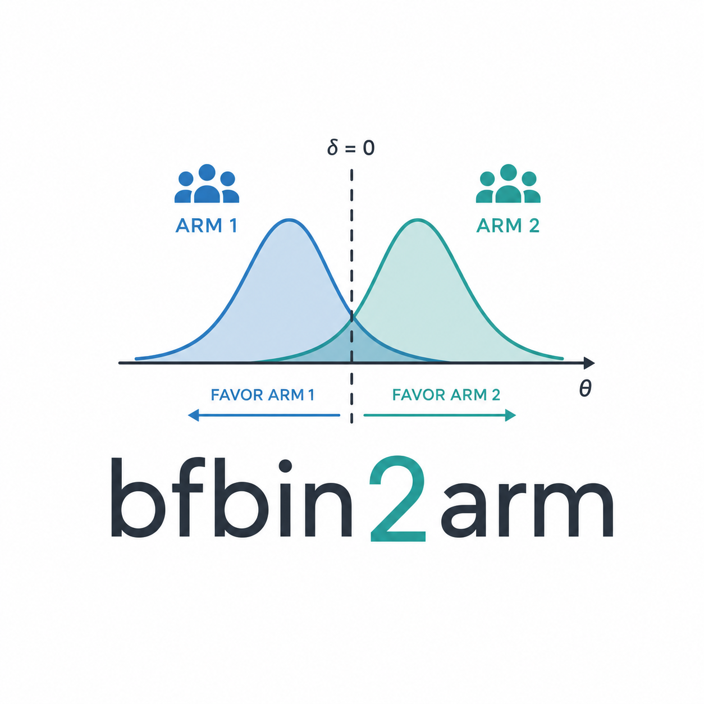
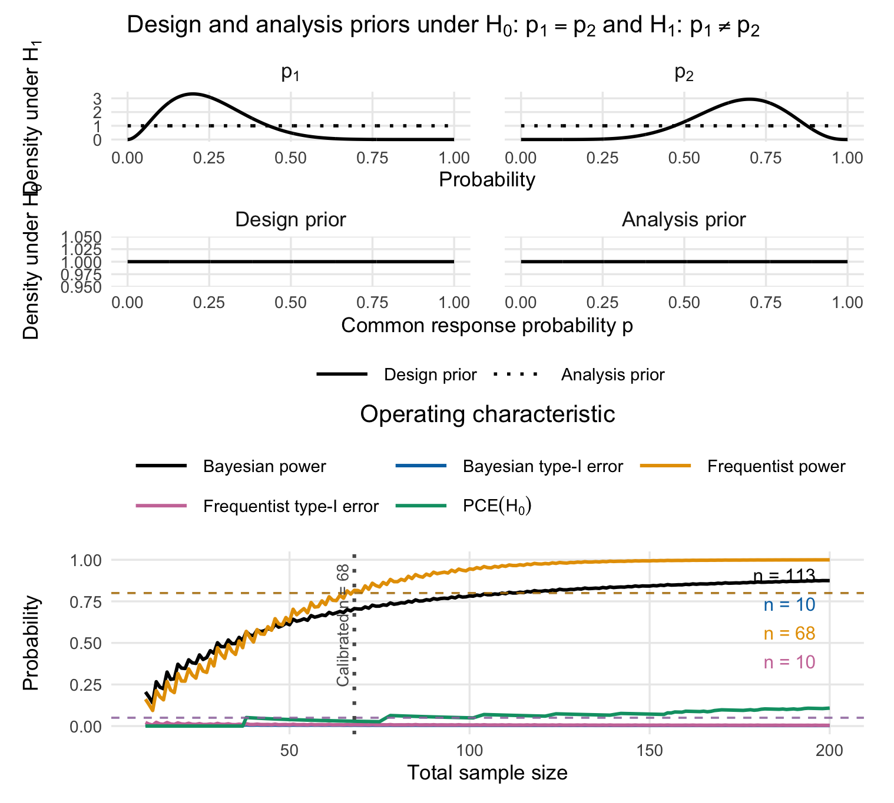
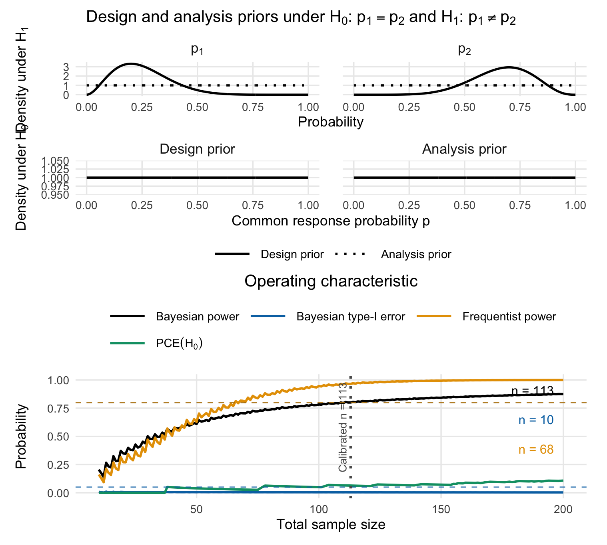

Power and Sample Size Calculations for two-sided Bayes Factors in two-arm clinical Phase II Trials with binary Endpoints
Riko Kelter
Institute of Medical Statistics and Computational Biology
Faculty of Medicine
University of Cologne
Cologne, Germany
Institute of Medical Statistics and Computational Biology
Faculty of Medicine
University of Cologne
Cologne, Germany
12 November 2026
bfbin2arm-twoarm_onestage_Bayesian_twosided.rmdScope
This vignette deals exclusively with the two-sided Bayes factor test
where and denote the event probabilities in the control and treatment arms. We write for the marginal likelihood under the common-probability null divided by the marginal likelihood under the unequal-probability alternative. Small values support and large values support .
Directional tests are covered by a separate vignette. They require additional choices about whether effects in the unexpected direction are excluded a priori or included in a composite null, as well as truncated priors and hypothesis-specific normalising constants. Keeping the examples separate makes the prior specification, decision rule, and operating characteristics of the two-sided test transparent.
Model and priors
Let
independently. Under , a common response probability is assigned a beta prior,
Under , independent beta priors are assigned to the arm-specific probabilities,
The package distinguishes analysis priors, which determine the Bayes factor applied to the observed data, from design priors, which average the operating characteristics at the planning stage. The two sets of priors may be identical, but they need not be.
For beta analysis priors, the Bayes factor is
The function twoarmbinbf01() evaluates this expression.
The functions powertwoarmbinbf01() and
design_twoarm_onestage_bf() compute exact operating
characteristics by summing over all possible pairs
;
no Monte Carlo simulation is needed.
Evidence and calibration
For an evidence threshold , the efficacy region is
The package reports the design-prior predictive probability of this
region under
as Power and under
as Type1_Error. For a threshold
,
CE_H0 is the predictive probability that
under
.
Optional frequentist operating characteristics are obtained by summing
over the same evidence region at fixed values of
.
The examples use and for strong evidence. Other thresholds should be prespecified and examined in sensitivity analyses.
Example 1: CONSIDER - a two-sided example with balanced allocation
The CONSIDER trial was a multicentre, randomised, double-blind, placebo-controlled phase II trial of canakinumab in adult-onset Still’s disease (Kedor et al. 2020). Its binary primary endpoint was a clinically relevant reduction in disease activity at week 12, defined by a decrease in DAS28 greater than 1.2. Recruitment ended early. The efficacy analysis contained 17 placebo patients and 18 canakinumab patients; 7 and 12, respectively, met the primary endpoint.
Observed Bayes factor
We code placebo as arm 1 and canakinumab as arm 2.
y1_consider <- 7L
n1_consider <- 17L
y2_consider <- 12L
n2_consider <- 18L
bf01_consider <- twoarmbinbf01(
y1 = y1_consider,
y2 = y2_consider,
n1 = n1_consider,
n2 = n2_consider,
a_0_a = 1, b_0_a = 1,
a_1_a = 1, b_1_a = 1,
a_2_a = 1, b_2_a = 1
)
bf01_consider
#> [1] 0.8447957
1 / bf01_consider
#> [1] 1.183718With uniform analysis priors, is about 0.845, or about 1.18. The observed data therefore provide little evidence for either equality or inequality.
Operating characteristics
The protocol assumed a placebo event probability no larger than 0.25 and a canakinumab event probability at least 0.67. As an illustration, we encode these expectations by and design priors under . Their means are 0.25 and 0.667. Uniform analysis priors are retained.
oc_consider <- powertwoarmbinbf01(
n1 = n1_consider,
n2 = n2_consider,
k = 1/10,
k_f = 10,
test = "BF01",
a_0_d = 1, b_0_d = 1,
a_0_a = 1, b_0_a = 1,
a_1_d = 3, b_1_d = 9,
a_2_d = 8, b_2_d = 4,
a_1_a = 1, b_1_a = 1,
a_2_a = 1, b_2_a = 1,
compute_freq_t1e = TRUE,
p1_power = 0.25,
p2_power = 2/3,
output = "numeric"
)
oc_consider
#> Power Type1_Error CE_H0
#> 0.497916267 0.005278293 0.000000000
#> Frequentist_Type1_Error Frequentist_Power
#> 0.008606593 0.448066391
#> attr(,"hypothesis")
#> [1] "H[1]:~p[1] != p[2] ~~ vs ~~ H[0]:~p[1] == p[2]"
#> attr(,"compute_freq_t1e")
#> [1] TRUE
#> attr(,"p1_power")
#> [1] 0.25
#> attr(,"p2_power")
#> [1] 0.6666667The call reports the exact operating characteristics at the achieved
sample sizes. Changing only n1 and n2 to 34
evaluates the sample size originally planned per arm.
oc_consider_planned <- powertwoarmbinbf01(
n1 = 34,
n2 = 34,
k = 1/10,
k_f = 10,
test = "BF01",
a_0_d = 1, b_0_d = 1,
a_0_a = 1, b_0_a = 1,
a_1_d = 3, b_1_d = 9,
a_2_d = 8, b_2_d = 4,
a_1_a = 1, b_1_a = 1,
a_2_a = 1, b_2_a = 1,
compute_freq_t1e = TRUE,
p1_power = 0.25,
p2_power = 2/3,
output = "numeric"
)
oc_consider_planned
#> Power Type1_Error CE_H0
#> 0.706635922 0.005550083 0.028985507
#> Frequentist_Type1_Error Frequentist_Power
#> 0.008496116 0.816404393
#> attr(,"hypothesis")
#> [1] "H[1]:~p[1] != p[2] ~~ vs ~~ H[0]:~p[1] == p[2]"
#> attr(,"compute_freq_t1e")
#> [1] TRUE
#> attr(,"p1_power")
#> [1] 0.25
#> attr(,"p2_power")
#> [1] 0.6666667Comparing calibration approaches
We now determine the required sample size prospectively using four different calibration approaches. All four examples use the same two-sided Bayes-factor test, analysis priors, design priors, evidence threshold, allocation ratio, and sample-size search range. Only the operating-characteristic constraints used to select the design differ.
The hypotheses are
where group 1 denotes placebo and group 2 denotes canakinumab. Evidence against is declared when .
For the Bayesian operating characteristics, we retain the illustrative design priors
and
independently. Although these design priors favour a treatment benefit, they are not truncated: both directions of a difference remain possible, and the hypothesis test remains two-sided. Uniform analysis priors are used under both models.
Frequentist power is evaluated at the fixed alternative . Frequentist type-I error is evaluated over a grid of common event probabilities under .
Throughout this section, “frequentist calibration” refers to calibrating the frequentist operating characteristics of the same Bayes-factor decision rule, not replacing it with a conventional frequentist test.
Frequentist calibration
The first design requires at least 80% frequentist power at the prespecified alternative and a frequentist type-I-error rate no larger than 5% over the supplied null grid.
The relevant targets are target_freq_power and
target_freq_type1. Bayesian operating characteristics are
also calculated, but they do not determine feasibility in this
calibration.
consider_frequentist <- design_twoarm_onestage_bf(
n_min = 10,
n_max = 200,
algorithm = "optimal",
# Two-sided Bayes-factor decision rule
test = "BF01",
k = 1/10,
k_f = 10,
# Enforce frequentist power and frequentist type-I error
calibration = "frequentist",
target_freq_power = 0.80,
target_freq_type1 = 0.05,
# No additional compelling-evidence constraint
target_ce_h0 = 0,
# Design and analysis priors under H0
a_0_d = 1, b_0_d = 1,
a_0_a = 1, b_0_a = 1,
# Design priors under H1
a_1_d = 3, b_1_d = 9,
a_2_d = 8, b_2_d = 4,
# Analysis priors under H1
a_1_a = 1, b_1_a = 1,
a_2_a = 1, b_2_a = 1,
# Fixed alternative for frequentist power
p1_power = 0.25,
p2_power = 2/3,
# Identical grids ensure evaluation along p1 = p2
p1_grid = seq(0, 1, by = 0.02),
p2_grid = seq(0, 1, by = 0.02),
# Equal allocation and sustained feasibility
alloc1 = 0.5,
alloc2 = 0.5,
sustain_n = 10L,
power_cushion = 0,
report_freq_type1 = TRUE,
progress = FALSE
)We print the results:
print(consider_frequentist)One-stage two-arm Bayes factor design
------------------------------------
Mode: optimal
Status: Smallest feasible one-stage two-arm design found.
Calibration: frequentist
Optional freq. Type-I reporting: on
Design: n_total = 68, n1 = 34, n2 = 34
Operating characteristics
Power = 0.7066
Type-I error = 0.0056
CE(H0) = 0.0290
Freq. Type-I = 0.0085
Freq. Power = 0.8164This design is selected using frequentist criteria only. Its Bayesian power need not reach 80%, even when its frequentist power does.
plot(consider_frequentist)
Figure 1: Visualization of the calibrated two-arm one-stage phase II design with a binary endpoint based on 5% frequentist type-I-error and 80% power.
Bayesian calibration
The second design requires at least 80% Bayesian power and a Bayesian type-I-error rate no larger than 5%. These quantities average rejection probabilities over the respective design priors.
The relevant targets are now target_power and
target_type1. Setting report_freq_type1 = TRUE
additionally requests frequentist type-I-error reporting at the selected
design, without making it a Bayesian calibration constraint. Supplying
p1_power and p2_power also allows frequentist
power to be reported.
consider_bayesian <- design_twoarm_onestage_bf(
n_min = 10,
n_max = 200,
algorithm = "optimal",
# Two-sided Bayes-factor decision rule
test = "BF01",
k = 1/10,
k_f = 10,
# Enforce Bayesian power and Bayesian type-I error
calibration = "Bayesian",
target_power = 0.80,
target_type1 = 0.05,
# No additional compelling-evidence constraint
target_ce_h0 = 0,
# Design and analysis priors under H0
a_0_d = 1, b_0_d = 1,
a_0_a = 1, b_0_a = 1,
# Design priors under H1
a_1_d = 3, b_1_d = 9,
a_2_d = 8, b_2_d = 4,
# Analysis priors under H1
a_1_a = 1, b_1_a = 1,
a_2_a = 1, b_2_a = 1,
# Report frequentist power at this alternative
p1_power = 0.25,
p2_power = 2/3,
# Null grid used for final frequentist T1E reporting
p1_grid = seq(0, 1, by = 0.02),
p2_grid = seq(0, 1, by = 0.02),
# Equal allocation and sustained feasibility
alloc1 = 0.5,
alloc2 = 0.5,
sustain_n = 10L,
power_cushion = 0,
report_freq_type1 = TRUE,
progress = FALSE
)
print(consider_bayesian)One-stage two-arm Bayes factor design
------------------------------------
Mode: optimal
Status: Smallest feasible one-stage two-arm design found.
Calibration: Bayesian
Optional freq. Type-I reporting: on
Design: n_total = 113, n1 = 56, n2 = 57
Operating characteristics
Power = 0.8002
Type-I error = 0.0041
CE(H0) = 0.0639
Freq. Type-I = 0.0058
Freq. Power = 0.9651The selected design satisfies the Bayesian requirements. The reported frequentist operating characteristics are diagnostic: they are not constraints in this search.
plot(consider_bayesian)
Figure 1: Visualization of the calibrated two-arm one-stage phase II design with a binary endpoint based on 5% Bayesian type-I-error and 80% Bayesian power.
Hybrid calibration
The third design combines at least 80% Bayesian power with a frequentist type-I-error rate no larger than 5% over the null grid.
Accordingly, the relevant targets are target_power and
target_freq_type1. Neither Bayesian type-I error nor
frequentist power is an active constraint.
consider_hybrid <- design_twoarm_onestage_bf(
n_min = 10,
n_max = 200,
algorithm = "optimal",
# Two-sided Bayes-factor decision rule
test = "BF01",
k = 1/10,
k_f = 10,
# Enforce Bayesian power and frequentist type-I error
calibration = "hybrid",
target_power = 0.80,
target_freq_type1 = 0.05,
# No additional compelling-evidence constraint
target_ce_h0 = 0,
# Design and analysis priors under H0
a_0_d = 1, b_0_d = 1,
a_0_a = 1, b_0_a = 1,
# Design priors under H1
a_1_d = 3, b_1_d = 9,
a_2_d = 8, b_2_d = 4,
# Analysis priors under H1
a_1_a = 1, b_1_a = 1,
a_2_a = 1, b_2_a = 1,
# Report frequentist power at this alternative
p1_power = 0.25,
p2_power = 2/3,
# Null grid for frequentist type-I-error calibration
p1_grid = seq(0, 1, by = 0.02),
p2_grid = seq(0, 1, by = 0.02),
# Equal allocation and sustained feasibility
alloc1 = 0.5,
alloc2 = 0.5,
sustain_n = 10L,
power_cushion = 0,
report_freq_type1 = TRUE,
progress = FALSE
)
print(consider_hybrid)One-stage two-arm Bayes factor design
------------------------------------
Mode: optimal
Status: Smallest feasible one-stage two-arm design found.
Calibration: hybrid
Optional freq. Type-I reporting: on
Design: n_total = 113, n1 = 56, n2 = 57
Operating characteristics
Power = 0.8002
Type-I error = 0.0041
CE(H0) = 0.0639
Freq. Type-I = 0.0058
Freq. Power = 0.9651This calibration is useful when power is defined prospectively through a design prior, while type-I-error control is assessed conditionally over the null parameter space.
Full calibration
The fourth design simultaneously requires:
- Bayesian power of at least 80%.
- Frequentist power of at least 80% at the specified alternative.
- Bayesian type-I-error rate no larger than 5%.
- Frequentist type-I-error rate no larger than 5% over the null grid.
All four targets are therefore supplied explicitly.
consider_full <- design_twoarm_onestage_bf(
n_min = 10,
n_max = 200,
algorithm = "optimal",
# Two-sided Bayes-factor decision rule
test = "BF01",
k = 1/10,
k_f = 10,
# Enforce both Bayesian and frequentist requirements
calibration = "full",
target_power = 0.80,
target_type1 = 0.05,
target_freq_power = 0.80,
target_freq_type1 = 0.05,
# No additional compelling-evidence constraint
target_ce_h0 = 0,
# Design and analysis priors under H0
a_0_d = 1, b_0_d = 1,
a_0_a = 1, b_0_a = 1,
# Design priors under H1
a_1_d = 3, b_1_d = 9,
a_2_d = 8, b_2_d = 4,
# Analysis priors under H1
a_1_a = 1, b_1_a = 1,
a_2_a = 1, b_2_a = 1,
# Fixed alternative for frequentist power
p1_power = 0.25,
p2_power = 2/3,
# Null grid for frequentist type-I-error calibration
p1_grid = seq(0, 1, by = 0.02),
p2_grid = seq(0, 1, by = 0.02),
# Equal allocation and sustained feasibility
alloc1 = 0.5,
alloc2 = 0.5,
sustain_n = 10L,
power_cushion = 0,
report_freq_type1 = TRUE,
progress = FALSE
)
print(consider_full)One-stage two-arm Bayes factor design
------------------------------------
Mode: optimal
Status: Smallest feasible one-stage two-arm design found.
Calibration: full
Optional freq. Type-I reporting: on
Design: n_total = 113, n1 = 56, n2 = 57
Operating characteristics
Power = 0.8002
Type-I error = 0.0041
CE(H0) = 0.0639
Freq. Type-I = 0.0058
Freq. Power = 0.9651Under identical search settings, the full calibration cannot select a smaller feasible sample size than any of the other three calibrations: its feasible set is their intersection. However, two or more modes may select the same design if the additional constraints are already satisfied at that sample size.
Comparing selected designs
Having run each calibration separately, we see that in this case, Bayesian, hybrid and full calibration yield the same designs. This is, of course, not always the case.
Sustained-feasibility diagnostics
Each example uses sustain_n = 10L. Consequently, the
calibration checks the relevant constraints at the candidate total
sample size and over a forward window of ten additional candidate total
sample sizes, within the search range.
Interpreting frequentist error control
The reported frequentist type-I error is the maximum over the supplied null grid. It approximates, but does not certify, the supremum over the continuous interval . A finer grid or continuous maximisation should therefore be used when stricter numerical verification is required.
Likewise, the 80% frequentist power requirement applies to the specified alternative , not to every possible unequal pair of event probabilities. Bayesian power instead averages over the entire alternative design prior.
The design priors should represent defensible pretrial uncertainty. They should not be made more concentrated merely to obtain a smaller required sample size.
Example 2: NADIM II - a two-sided example with unequal allocation
Trial setting and observed data
NADIM II was a randomized phase II trial in resectable stage IIIA/IIIB non-small-cell lung cancer. Its experimental:control allocation was 2:1 (Provencio et al. 2023). The primary binary endpoint was pathological complete response after neoadjuvant treatment. The experimental regimen added nivolumab to chemotherapy; control patients received chemotherapy alone (Provencio et al. 2023).
The reported primary-analysis counts were 21 responses among 57 experimental patients and 2 among 29 control patients. Patients who did not undergo surgery were counted as nonresponders, rather than removed from these denominators (Provencio et al. 2023). The original publication reported two-sided tests (Provencio et al. 2023).
Here and throughout the code, arm 1 is control and arm 2 is
experimental. Thus the trial’s 2:1 experimental:control
allocation corresponds to alloc1 = 1/3 and
alloc2 = 2/3.
library(bfbin2arm)
y1_nadim <- 2L
n1_nadim <- 29L
y2_nadim <- 21L
n2_nadim <- 57L
nadim_observed <- data.frame(
Arm = c("Control: chemotherapy", "Experimental: nivolumab + chemotherapy"),
Responses = c(y1_nadim, y2_nadim),
Patients = c(n1_nadim, n2_nadim),
Response_rate = c(y1_nadim / n1_nadim, y2_nadim / n2_nadim)
)
knitr::kable(nadim_observed, digits = 4)| Arm | Responses | Patients | Response_rate |
|---|---|---|---|
| Control: chemotherapy | 2 | 29 | 0.0690 |
| Experimental: nivolumab + chemotherapy | 21 | 57 | 0.3684 |
Two-sided Bayes-factor analysis
We compare
The analysis priors are and, independently, . Evidence against is declared when . This is a trial-inspired Bayesian reanalysis, not a reconstruction of the original frequentist test.
bf01_nadim <- twoarmbinbf01(
y1 = y1_nadim, y2 = y2_nadim,
n1 = n1_nadim, n2 = n2_nadim,
a_0_a = 1, b_0_a = 1,
a_1_a = 1, b_1_a = 1,
a_2_a = 1, b_2_a = 1
)
# Independent log-scale check; binomial coefficients cancel.
log_bf01_nadim <-
lbeta(1 + y1_nadim + y2_nadim,
1 + n1_nadim + n2_nadim - y1_nadim - y2_nadim) -
lbeta(1 + y1_nadim, 1 + n1_nadim - y1_nadim) -
lbeta(1 + y2_nadim, 1 + n2_nadim - y2_nadim)
stopifnot(
is.finite(bf01_nadim),
isTRUE(all.equal(bf01_nadim, exp(log_bf01_nadim), tolerance = 1e-10))
)
c(
BF01 = bf01_nadim,
BF10 = 1 / bf01_nadim,
risk_difference = y2_nadim / n2_nadim - y1_nadim / n1_nadim
)
#> BF01 BF10 risk_difference
#> 0.03663115 27.29916950 0.29945554The resulting is approximately 0.0366, corresponding to of approximately 27.3. The Bayes factor supports unequal response probabilities. The observed rates indicate which arm has the higher response rate; a two-sided Bayes factor alone is not a directional test.
Prospective planning assumptions
The original trial’s sample-size calculation assumed response probabilities of 0.10 under control and 0.40 under experimental treatment, 80% power, 5% alpha, and a planned sample of 90 allowing for 15% dropout (Provencio et al. 2023). We use those planning probabilities, not the observed response rates, to construct a prospective-design illustration.
For frequentist power, the fixed alternative is . For Bayesian power we use independent design priors
Their means are 0.10 and 0.40 and their beta concentration parameters are both 20. The concentration 20 is an illustrative choice for this vignette, not a prior specification from the NADIM II protocol. It should be varied in sensitivity analyses. The priors are not truncated to ; the test remains two-sided.
Under , the common response probability has the uniform design prior . This is also an illustrative choice, retained for comparability with the preceding example; it is not inferred from the pooled NADIM II data. Analysis priors remain uniform in every calibration. Consequently, design-prior information enters predictive operating characteristics, not the Bayes factor as borrowed historical observations.
All four calibrations below use
,
a fixed 1:2 control:experimental allocation, and a search over
total sample sizes from 12 to 240. The ceiling is a
bounded teaching example, not a claim that all possible prior
specifications are feasible within this range. With
sustain_n = 10L, the relevant constraints must hold at the
candidate total and at the next ten candidate totals, subject to the
search range. The package documents these arguments and the four
calibration modes in its reference
manual.
| Calibration | Power requirement | Type-I-error requirement |
|---|---|---|
| Frequentist | Frequentist power at least 0.80 | Frequentist T1E at most 0.05 |
| Bayesian | Bayesian power at least 0.80 | Bayesian T1E at most 0.05 |
| Hybrid | Bayesian power at least 0.80 | Frequentist T1E at most 0.05 |
| Full | Both power definitions at least 0.80 | Both T1E definitions at most 0.05 |
In every example, target_ce_h0 = 0 switches off an
additional constraint on compelling evidence for the null.
k_f = 10 is retained to calculate that diagnostic
probability. Frequentist calibration refers to the frequentist operating
characteristics of the same Bayes-factor rule, not to replacing
it with a chi-square or Fisher test.
Frequentist calibration with 1:2 allocation
This first call enforces frequentist power at the original planning alternative and frequentist type-I-error control over a common-probability grid under . Bayesian operating characteristics are reported but are not feasibility constraints.
nadim_frequentist <- design_twoarm_onestage_bf(
n_min = 12, n_max = 240,
algorithm = "optimal",
test = "BF01", k = 1/10, k_f = 3,
calibration = "frequentist",
target_freq_power = 0.80,
target_freq_type1 = 0.05,
target_ce_h0 = 0,
# Uniform null design and analysis priors
a_0_d = 1, b_0_d = 1,
a_0_a = 1, b_0_a = 1,
# Alternative design priors: means 0.10 and 0.40
a_1_d = 2*2, b_1_d = 18*2,
a_2_d = 8*2, b_2_d = 12*2,
# Uniform alternative analysis priors
a_1_a = 1, b_1_a = 1,
a_2_a = 1, b_2_a = 1,
p1_power = 0.10, p2_power = 0.40,
p1_grid = seq(0, 1, by = 0.02),
p2_grid = seq(0, 1, by = 0.02),
# Arm 1 = control; arm 2 = experimental
alloc1 = 1/3, alloc2 = 2/3,
sustain_n = 10L, power_cushion = 0,
report_freq_type1 = TRUE,
progress = TRUE
)
summary(nadim_frequentist)Summary: One-stage two-arm Bayes factor design
---------------------------------------------
Mode: optimal
Status: Smallest feasible one-stage two-arm design found.
Calibration: frequentist
Feasible: yes
Search overview
n evaluated = 229
pointwise feasible = 121
sustained feasible = 120
first pointwise n = 119
first sustained n = 121
Selected design
n_total = 121, n1 = 40, n2 = 81Bayesian calibration with 1:2 allocation
The second call enforces prior-predictive power and prior-predictive type-I error under the stated beta design priors. The supplied fixed alternative and null grid are used for additional reporting, not as Bayesian feasibility constraints.
nadim_bayesian <- design_twoarm_onestage_bf(
n_min = 12, n_max = 240,
algorithm = "optimal",
test = "BF01", k = 1/10, k_f = 3,
calibration = "Bayesian",
target_power = 0.80,
target_type1 = 0.05,
target_ce_h0 = 0,
a_0_d = 1, b_0_d = 1,
a_0_a = 1, b_0_a = 1,
a_1_d = 2, b_1_d = 18,
a_2_d = 8, b_2_d = 12,
a_1_a = 1, b_1_a = 1,
a_2_a = 1, b_2_a = 1,
# Reporting only; not Bayesian calibration constraints
p1_power = 0.10, p2_power = 0.40,
p1_grid = seq(0, 1, by = 0.02),
p2_grid = seq(0, 1, by = 0.02),
alloc1 = 1/3, alloc2 = 2/3,
sustain_n = 10L, power_cushion = 0,
report_freq_type1 = TRUE,
progress = TRUE
)
summary(nadim_bayesian)Summary: One-stage two-arm Bayes factor design
---------------------------------------------
Mode: optimal
Status: Smallest feasible one-stage two-arm design found.
Calibration: Bayesian
Feasible: yes
Search overview
n evaluated = 229
pointwise feasible = 54
sustained feasible = 54
first pointwise n = 187
first sustained n = 187
Selected design
n_total = 187, n1 = 62, n2 = 125Hybrid calibration with 1:2 allocation
The hybrid call combines Bayesian power with frequentist type-I-error control. Frequentist power and Bayesian type-I error are diagnostics, not active constraints.
nadim_hybrid <- design_twoarm_onestage_bf(
n_min = 12, n_max = 240,
algorithm = "optimal",
test = "BF01", k = 1/10, k_f = 10,
calibration = "hybrid",
target_power = 0.80,
target_freq_type1 = 0.05,
target_ce_h0 = 0,
a_0_d = 1, b_0_d = 1,
a_0_a = 1, b_0_a = 1,
a_1_d = 2, b_1_d = 18,
a_2_d = 8, b_2_d = 12,
a_1_a = 1, b_1_a = 1,
a_2_a = 1, b_2_a = 1,
p1_power = 0.10, p2_power = 0.40,
p1_grid = seq(0, 1, by = 0.02),
p2_grid = seq(0, 1, by = 0.02),
alloc1 = 1/3, alloc2 = 2/3,
sustain_n = 10L, power_cushion = 0,
report_freq_type1 = TRUE,
progress = FALSE
)
summary(nadim_hybrid)Summary: One-stage two-arm Bayes factor design
---------------------------------------------
Mode: optimal
Status: Smallest feasible one-stage two-arm design found.
Calibration: hybrid
Feasible: yes
Search overview
n evaluated = 229
pointwise feasible = 54
sustained feasible = 54
first pointwise n = 187
first sustained n = 187
Selected design
n_total = 187, n1 = 62, n2 = 125Full calibration with 1:2 allocation
The final unequal-allocation call enforces both power definitions and both type-I-error definitions simultaneously. Every enforced target is specified explicitly.
nadim_full <- design_twoarm_onestage_bf(
n_min = 12, n_max = 240,
algorithm = "optimal",
test = "BF01", k = 1/10, k_f = 10,
calibration = "full",
target_power = 0.80,
target_type1 = 0.05,
target_freq_power = 0.80,
target_freq_type1 = 0.05,
target_ce_h0 = 0,
a_0_d = 1, b_0_d = 1,
a_0_a = 1, b_0_a = 1,
a_1_d = 2, b_1_d = 18,
a_2_d = 8, b_2_d = 12,
a_1_a = 1, b_1_a = 1,
a_2_a = 1, b_2_a = 1,
p1_power = 0.10, p2_power = 0.40,
p1_grid = seq(0, 1, by = 0.02),
p2_grid = seq(0, 1, by = 0.02),
alloc1 = 1/3, alloc2 = 2/3,
sustain_n = 10L, power_cushion = 0,
report_freq_type1 = TRUE,
progress = FALSE
)
summary(nadim_full)Summary: One-stage two-arm Bayes factor design
---------------------------------------------
Mode: optimal
Status: Smallest feasible one-stage two-arm design found.
Calibration: full
Feasible: yes
Search overview
n evaluated = 229
pointwise feasible = 54
sustained feasible = 54
first pointwise n = 187
first sustained n = 187
Selected design
n_total = 187, n1 = 62, n2 = 125Comparing selected designs
Only after making the four individual design calls do we collect the results for reporting. No additional calibration is performed here.
nadim_designs <- list(
Frequentist = nadim_frequentist,
Bayesian = nadim_bayesian,
Hybrid = nadim_hybrid,
Full = nadim_full
)
nadim_comparison <- do.call(rbind, lapply(names(nadim_designs), function(nm) {
x <- nadim_designs[[nm]]
out <- data.frame(
Calibration = nm,
Feasible = isTRUE(x$feasible),
N_total = NA_real_, n_control = NA_real_, n_experimental = NA_real_,
Bayesian_power = NA_real_, Bayesian_T1E = NA_real_,
Frequentist_power = NA_real_, Frequentist_T1E_grid = NA_real_,
PCE_H0 = NA_real_
)
if (isTRUE(x$feasible) && !is.null(x$operating_characteristics)) {
oc <- x$operating_characteristics
out$N_total <- unname(x$design["n_total"])
out$n_control <- unname(x$design["n1"])
out$n_experimental <- unname(x$design["n2"])
out$Bayesian_power <- oc$power
out$Bayesian_T1E <- oc$type1
out$Frequentist_power <- oc$freq_power
out$Frequentist_T1E_grid <- oc$freq_type1
out$PCE_H0 <- oc$ce_h0
}
out
}))
rownames(nadim_comparison) <- NULL
knitr::kable(
nadim_comparison[c("Calibration", "Feasible", "N_total",
"n_control", "n_experimental")],
caption = "Selected NADIM II-inspired designs with 1:2 control:experimental allocation."
)| Calibration | Feasible | N_total | n_control | n_experimental |
|---|---|---|---|---|
| Frequentist | TRUE | 121 | 40 | 81 |
| Bayesian | TRUE | 187 | 62 | 125 |
| Hybrid | TRUE | 187 | 62 | 125 |
| Full | TRUE | 187 | 62 | 125 |
knitr::kable(
nadim_comparison[c("Calibration", "Bayesian_power", "Bayesian_T1E",
"Frequentist_power", "Frequentist_T1E_grid", "PCE_H0")],
digits = 4,
caption = "Operating characteristics at each selected design."
)| Calibration | Bayesian_power | Bayesian_T1E | Frequentist_power | Frequentist_T1E_grid | PCE_H0 |
|---|---|---|---|---|---|
| Frequentist | 0.7009 | 0.0043 | 0.8137 | 0.0065 | 0.0560 |
| Bayesian | 0.8018 | 0.0036 | 0.9631 | 0.0050 | 0.7886 |
| Hybrid | 0.8018 | 0.0036 | 0.9631 | 0.0050 | 0.0903 |
| Full | 0.8018 | 0.0036 | 0.9631 | 0.0050 | 0.0903 |
# A selected design near n_max may have a truncated forward window.
for (nm in names(nadim_designs)) {
x <- nadim_designs[[nm]]
if (isTRUE(x$feasible) &&
unname(x$design["n_total"]) + x$inputs$sustain_n > x$inputs$n_max) {
warning(nm, ": increase n_max to check the complete sustained-feasibility window.",
call. = FALSE)
}
}All selected sample sizes are totals across both arms. Arm sizes are rounded to integers, so the resulting ratio need not be exactly 1:2. The package conditions its calculations on the selected arm sizes; it does not additionally average over random allocation-count imbalance. If exact 1:2 counts are required, a suitable total divisible by three must be chosen and its operating characteristics re-evaluated.
A design may satisfy frequentist power at before it satisfies Bayesian power, since the latter averages over uncertain response probabilities, including smaller differences. Calibration modes can therefore select different totals. Conversely, several modes may select the same total when their additional constraints are already satisfied. No sample-size saving is presumed for Bayesian calibration.
The frequentist type-I error shown is a maximum over the supplied
grid, not a certified supremum over the continuous null space. A finer
grid or continuous maximisation is needed for stricter numerical
verification. The 80% frequentist power target is pointwise at the
specified alternative. PCE_H0 is reported but not
constrained.
These totals concern participants with binary outcomes defined according to the analysis strategy. They are not directly comparable to the original planned recruitment target of 90 without considering its dropout allowance, different testing rule, and outcome-handling assumptions. Failure to undergo surgery is an endpoint failure in this illustration, not automatically a missing outcome warranting dropout inflation.
Optional: isolate the allocation effect
To study unequal allocation rather than confound it with the
calibration mode, repeat the full calibration under
equal allocation, changing only alloc1 and
alloc2.
nadim_full_balanced <- design_twoarm_onestage_bf(
n_min = 12, n_max = 240,
algorithm = "optimal",
test = "BF01", k = 1/10, k_f = 10,
calibration = "full",
target_power = 0.80,
target_type1 = 0.05,
target_freq_power = 0.80,
target_freq_type1 = 0.05,
target_ce_h0 = 0,
a_0_d = 1, b_0_d = 1,
a_0_a = 1, b_0_a = 1,
a_1_d = 2, b_1_d = 18,
a_2_d = 8, b_2_d = 12,
a_1_a = 1, b_1_a = 1,
a_2_a = 1, b_2_a = 1,
p1_power = 0.10, p2_power = 0.40,
p1_grid = seq(0, 1, by = 0.02),
p2_grid = seq(0, 1, by = 0.02),
# Only substantive change: equal instead of unequal allocation
alloc1 = 0.5, alloc2 = 0.5,
sustain_n = 10L, power_cushion = 0,
report_freq_type1 = TRUE,
progress = FALSE
)
summary(nadim_full_balanced)Summary: One-stage two-arm Bayes factor design
---------------------------------------------
Mode: optimal
Status: Smallest feasible one-stage two-arm design found.
Calibration: full
Feasible: yes
Search overview
n evaluated = 229
pointwise feasible = 80
sustained feasible = 80
first pointwise n = 161
first sustained n = 161
Selected design
n_total = 161, n1 = 80, n2 = 81
if (isTRUE(nadim_full$feasible) && isTRUE(nadim_full_balanced$feasible)) {
allocation_comparison <- data.frame(
Allocation_control_experimental = c("1:1", "1:2"),
N_total = c(unname(nadim_full_balanced$design["n_total"]),
unname(nadim_full$design["n_total"])),
n_control = c(unname(nadim_full_balanced$design["n1"]),
unname(nadim_full$design["n1"])),
n_experimental = c(unname(nadim_full_balanced$design["n2"]),
unname(nadim_full$design["n2"]))
)
knitr::kable(allocation_comparison)
}| Allocation_control_experimental | N_total | n_control | n_experimental |
|---|---|---|---|
| 1:1 | 161 | 80 | 81 |
| 1:2 | 187 | 62 | 125 |
Unequal allocation is a supported design choice, not a guarantee of a smaller total sample size. The benefit illustrated here is the ability to calibrate the actual intended allocation and quantify its sample-size and operating-characteristic implications without imposing balance.
Joint sensitivity to the evidence threshold, design-prior concentration, and null-evidence requirement
We now investigate how the selected sample size depends on the evidence threshold, uncertainty in the alternative design prior, and an additional requirement on the probability of obtaining compelling evidence for the null hypothesis.
This sensitivity analysis varies the concentration of the alternative design priors to describe the consequences of different planning assumptions. It does not justify choosing a more concentrated prior merely to obtain a smaller sample size.
The alternative design priors have the common form
Their means remain 0.10 and 0.40, while the concentration controls their dispersion. We examine all six combinations of
Uniform analysis priors are retained in every scenario. Consequently, changing changes predictive operating characteristics but does not change the Bayes-factor decision rule at a fixed sample size. In particular, it does not change frequentist power or frequentist type-I error at a fixed design.
The null design prior remains
All scenarios retain 1:2 control-to-experimental allocation, frequentist power evaluation at , and the same 80% power targets and 5% type-I-error bounds.
For each scenario, we perform frequentist, hybrid, and full calibration twice:
- Without an additional probability-of-compelling-evidence requirement.
- With the additional requirement
The threshold k_f = 3 is held fixed throughout. Thus,
the second analysis requires a 60% predictive probability of obtaining
at least threefold evidence for equality under the null design
prior.
This requirement is distinct from type-I-error control: avoiding false positive conclusions does not imply that the trial frequently produces strong evidence for equality.
Sensitivity grid and computational settings
The complete sensitivity analysis comprises 36 searches: six threshold–concentration combinations, three calibration modes, and two PCE settings.
The default search range matches the preceding example and is deliberately bounded. A scenario for which no feasible design is found is reported as such; this does not establish that a feasible design does not exist at larger sample sizes.
Adding a demanding null-evidence requirement can require a substantially larger search range. Before increasing that range, the Bayes-factor and predictive-probability calculations should use numerically stable implementations.
library(bfbin2arm)
nadim_sensitivity_scenarios <- data.frame(
scenario_id = c(
"k10_s20",
"k10_s50",
"k10_s100",
"k3_s20",
"k3_s50",
"k3_s100"
),
evidence_threshold = c(
"1/10", "1/10", "1/10",
"1/3", "1/3", "1/3"
),
k = c(
1/10, 1/10, 1/10,
1/3, 1/3, 1/3
),
concentration = c(
20, 50, 100,
20, 50, 100
),
stringsAsFactors = FALSE
)
nadim_sensitivity_scenarios$a1 <-
0.10 * nadim_sensitivity_scenarios$concentration
nadim_sensitivity_scenarios$b1 <-
0.90 * nadim_sensitivity_scenarios$concentration
nadim_sensitivity_scenarios$a2 <-
0.40 * nadim_sensitivity_scenarios$concentration
nadim_sensitivity_scenarios$b2 <-
0.60 * nadim_sensitivity_scenarios$concentration
nadim_pce_requirements <- c(
"No additional requirement" = 0,
"PCE(H0) >= 0.60" = 0.60
)
nadim_sensitivity_n_min <- 12L
nadim_sensitivity_n_max <- 240L
nadim_sensitivity_sustain <- 10L
nadim_sensitivity_kf <- 3
knitr::kable(
nadim_sensitivity_scenarios[
c(
"evidence_threshold",
"concentration",
"a1", "b1",
"a2", "b2"
)
],
col.names = c(
"k",
"Concentration",
"a1", "b1",
"a2", "b2"
),
caption = paste(
"Alternative design-prior scenarios:",
"two evidence thresholds and three prior concentrations."
)
)| k | Concentration | a1 | b1 | a2 | b2 |
|---|---|---|---|---|---|
| 1/10 | 20 | 2 | 18 | 8 | 12 |
| 1/10 | 50 | 5 | 45 | 20 | 30 |
| 1/10 | 100 | 10 | 90 | 40 | 60 |
| 1/3 | 20 | 2 | 18 | 8 | 12 |
| 1/3 | 50 | 5 | 45 | 20 | 30 |
| 1/3 | 100 | 10 | 90 | 40 | 60 |
Running the calibrations
Each calibration mode has its own explicit design-function call. The loops repeat these calls across the six sensitivity scenarios and the two null-evidence requirements.
When the PCE requirement is active, the first mode is more precisely described as frequentist power/type-I-error calibration augmented by a Bayesian predictive null-evidence constraint.
Every search uses sustain_n = 10L. The active
constraints must therefore hold at the selected total sample size and at
the next ten candidate total sample sizes, subject to the search range.
The extraction below checks that the complete forward window was
available.
The following chunk performs 36 searches and may take time. Knitr caching avoids repeating them when the inputs have not changed. When working with a locally modified package, invalidate the cache after changing its numerical implementation.
nadim_sensitivity_designs <- readRDS("nadim_sensitivity_designs.rds")
nadim_sensitivity_designs <- list()
for (i in seq_len(nrow(nadim_sensitivity_scenarios))) {
scenario <- nadim_sensitivity_scenarios[i, ]
for (pce_label in names(nadim_pce_requirements)) {
pce_target <- unname(nadim_pce_requirements[pce_label])
# 1. Frequentist power and frequentist type-I error,
# plus the PCE constraint when pce_target > 0.
design_frequentist <- design_twoarm_onestage_bf(
n_min = nadim_sensitivity_n_min,
n_max = nadim_sensitivity_n_max,
algorithm = "optimal",
test = "BF01",
k = scenario$k,
k_f = nadim_sensitivity_kf,
calibration = "frequentist",
target_freq_power = 0.80,
target_freq_type1 = 0.05,
target_ce_h0 = pce_target,
# Null design and analysis priors
a_0_d = 1, b_0_d = 1,
a_0_a = 1, b_0_a = 1,
# Alternative design priors
a_1_d = scenario$a1,
b_1_d = scenario$b1,
a_2_d = scenario$a2,
b_2_d = scenario$b2,
# Uniform alternative analysis priors
a_1_a = 1, b_1_a = 1,
a_2_a = 1, b_2_a = 1,
# Fixed alternative for frequentist power
p1_power = 0.10,
p2_power = 0.40,
# Common-probability null grid
p1_grid = seq(0, 1, by = 0.02),
p2_grid = seq(0, 1, by = 0.02),
# Arm 1 = control; arm 2 = experimental
alloc1 = 1/3,
alloc2 = 2/3,
sustain_n = nadim_sensitivity_sustain,
power_cushion = 0,
report_freq_type1 = TRUE,
progress = FALSE
)
# 2. Bayesian power and frequentist type-I error,
# plus the PCE constraint when pce_target > 0.
design_hybrid <- design_twoarm_onestage_bf(
n_min = nadim_sensitivity_n_min,
n_max = nadim_sensitivity_n_max,
algorithm = "optimal",
test = "BF01",
k = scenario$k,
k_f = nadim_sensitivity_kf,
calibration = "hybrid",
target_power = 0.80,
target_freq_type1 = 0.05,
target_ce_h0 = pce_target,
a_0_d = 1, b_0_d = 1,
a_0_a = 1, b_0_a = 1,
a_1_d = scenario$a1,
b_1_d = scenario$b1,
a_2_d = scenario$a2,
b_2_d = scenario$b2,
a_1_a = 1, b_1_a = 1,
a_2_a = 1, b_2_a = 1,
# Used for reporting frequentist power
p1_power = 0.10,
p2_power = 0.40,
p1_grid = seq(0, 1, by = 0.02),
p2_grid = seq(0, 1, by = 0.02),
alloc1 = 1/3,
alloc2 = 2/3,
sustain_n = nadim_sensitivity_sustain,
power_cushion = 0,
report_freq_type1 = TRUE,
progress = FALSE
)
# 3. Both power definitions and both type-I-error definitions,
# plus the PCE constraint when pce_target > 0.
design_full <- design_twoarm_onestage_bf(
n_min = nadim_sensitivity_n_min,
n_max = nadim_sensitivity_n_max,
algorithm = "optimal",
test = "BF01",
k = scenario$k,
k_f = nadim_sensitivity_kf,
calibration = "full",
target_power = 0.80,
target_type1 = 0.05,
target_freq_power = 0.80,
target_freq_type1 = 0.05,
target_ce_h0 = pce_target,
a_0_d = 1, b_0_d = 1,
a_0_a = 1, b_0_a = 1,
a_1_d = scenario$a1,
b_1_d = scenario$b1,
a_2_d = scenario$a2,
b_2_d = scenario$b2,
a_1_a = 1, b_1_a = 1,
a_2_a = 1, b_2_a = 1,
p1_power = 0.10,
p2_power = 0.40,
p1_grid = seq(0, 1, by = 0.02),
p2_grid = seq(0, 1, by = 0.02),
alloc1 = 1/3,
alloc2 = 2/3,
sustain_n = nadim_sensitivity_sustain,
power_cushion = 0,
report_freq_type1 = TRUE,
progress = FALSE
)
run_id <- paste(
scenario$scenario_id,
if (pce_target == 0) "without_pce" else "with_pce60",
sep = "__"
)
nadim_sensitivity_designs[[run_id]] <- list(
scenario = scenario,
pce_target = pce_target,
pce_label = pce_label,
designs = list(
Frequentist = design_frequentist,
Hybrid = design_hybrid,
Full = design_full
)
)
}
}Extracting results and checking the forward window
We distinguish three outcomes:
- A feasible design with a complete ten-step forward window.
- No feasible design found within the search range.
- A returned feasible design too close to the search boundary for the complete forward window to have been assessed.
For the last outcome, the tables request an extended search rather than presenting the selected total as fully verified.
nadim_sensitivity_rows <- list()
for (run_id in names(nadim_sensitivity_designs)) {
run <- nadim_sensitivity_designs[[run_id]]
for (mode in names(run$designs)) {
x <- run$designs[[mode]]
package_feasible <- isTRUE(x$feasible)
selected_n <- if (package_feasible) {
unname(x$design["n_total"])
} else {
NA_real_
}
complete_window <- package_feasible &&
is.finite(selected_n) &&
selected_n + x$inputs$sustain_n <= x$inputs$n_max
status <- if (!package_feasible) {
"Not found in range"
} else if (!complete_window) {
"Extend search: truncated window"
} else {
"Feasible"
}
out <- data.frame(
scenario_id = run$scenario$scenario_id,
k = run$scenario$evidence_threshold,
concentration = run$scenario$concentration,
Calibration = mode,
PCE_target = run$pce_target,
Status = status,
N_total = selected_n,
n_control = NA_real_,
n_experimental = NA_real_,
Bayesian_power = NA_real_,
Bayesian_T1E = NA_real_,
Frequentist_power = NA_real_,
Frequentist_T1E_grid = NA_real_,
PCE_H0 = NA_real_,
stringsAsFactors = FALSE
)
if (package_feasible &&
!is.null(x$operating_characteristics)) {
oc <- x$operating_characteristics
out$n_control <- unname(x$design["n1"])
out$n_experimental <- unname(x$design["n2"])
out$Bayesian_power <- oc$power
out$Bayesian_T1E <- oc$type1
out$Frequentist_power <- oc$freq_power
out$Frequentist_T1E_grid <- oc$freq_type1
out$PCE_H0 <- oc$ce_h0
}
nadim_sensitivity_rows[[length(nadim_sensitivity_rows) + 1L]] <- out
}
}
nadim_sensitivity_results <- do.call(
rbind,
nadim_sensitivity_rows
)
rownames(nadim_sensitivity_results) <- NULLSample sizes with and without the PCE requirement
The first table compares the selected total sample sizes for all six threshold–concentration combinations. Within each calibration mode, the results without and with the 60% PCE requirement are shown alongside one another.
“Not found” refers only to the specified search range. It is not a claim that the calibration requirements are impossible to attain.
format_selected_n <- function(scenario_id, mode, pce_target) {
z <- nadim_sensitivity_results[
nadim_sensitivity_results$scenario_id == scenario_id &
nadim_sensitivity_results$Calibration == mode &
nadim_sensitivity_results$PCE_target == pce_target,
,
drop = FALSE
]
stopifnot(nrow(z) == 1L)
if (z$Status == "Feasible") {
return(as.character(as.integer(z$N_total)))
}
if (z$Status == "Not found in range") {
return(paste0(
"Not found [",
nadim_sensitivity_n_min, ", ",
nadim_sensitivity_n_max, "]"
))
}
"Extend search"
}
nadim_sensitivity_size_table <-
nadim_sensitivity_scenarios[
c("scenario_id", "evidence_threshold", "concentration")
]
for (mode in c("Frequentist", "Hybrid", "Full")) {
nadim_sensitivity_size_table[[paste0(mode, "_without_PCE")]] <-
vapply(
nadim_sensitivity_size_table$scenario_id,
format_selected_n,
character(1),
mode = mode,
pce_target = 0
)
nadim_sensitivity_size_table[[paste0(mode, "_with_PCE60")]] <-
vapply(
nadim_sensitivity_size_table$scenario_id,
format_selected_n,
character(1),
mode = mode,
pce_target = 0.60
)
}
knitr::kable(
nadim_sensitivity_size_table[
c(
"evidence_threshold",
"concentration",
"Frequentist_without_PCE",
"Frequentist_with_PCE60",
"Hybrid_without_PCE",
"Hybrid_with_PCE60",
"Full_without_PCE",
"Full_with_PCE60"
)
],
col.names = c(
"k",
"Concentration",
"Freq.: no PCE",
"Freq.: PCE >= 0.60",
"Hybrid: no PCE",
"Hybrid: PCE >= 0.60",
"Full: no PCE",
"Full: PCE >= 0.60"
),
caption = paste(
"Selected total sample sizes with and without an additional",
"60% probability of BF01 > 3 under H0.",
"All designs retain 1:2 control-to-experimental allocation."
)
)| k | Concentration | Freq.: no PCE | Freq.: PCE >= 0.60 | Hybrid: no PCE | Hybrid: PCE >= 0.60 | Full: no PCE | Full: PCE >= 0.60 |
|---|---|---|---|---|---|---|---|
| 1/10 | 20 | 121 | 121 | 187 | 187 | 187 | 187 |
| 1/10 | 50 | 121 | 121 | 146 | 146 | 146 | 146 |
| 1/10 | 100 | 121 | 121 | 131 | 131 | 131 | 131 |
| 1/3 | 20 | 85 | 85 | 132 | 132 | 132 | 132 |
| 1/3 | 50 | 85 | 85 | 103 | 103 | 103 | 103 |
| 1/3 | 100 | 85 | 85 | 94 | 94 | 94 | 94 |
Arm-specific sample sizes and search status
The next tables give the selected arm sizes and retain the explicit search status. They separate the two PCE settings to keep the tables readable.
for (pce_target in c(0, 0.60)) {
z <- nadim_sensitivity_results[
nadim_sensitivity_results$PCE_target == pce_target,
c(
"k",
"concentration",
"Calibration",
"Status",
"N_total",
"n_control",
"n_experimental"
),
drop = FALSE
]
# Do not present truncated-window candidates as verified selections.
size_columns <- c(
"N_total",
"n_control",
"n_experimental"
)
z[z$Status != "Feasible", size_columns] <- NA_real_
caption <- if (pce_target == 0) {
"Selected arm sizes without an additional PCE(H0) requirement."
} else {
paste(
"Selected arm sizes requiring",
"P(BF01 > 10 | H0) >= 0.60."
)
}
cat(
knitr::kable(
z,
col.names = c(
"k",
"Concentration",
"Calibration",
"Status",
"Total N",
"Control",
"Experimental"
),
digits = 0,
caption = caption
),
sep = "\n"
)
cat("\n\n")
}| k | Concentration | Calibration | Status | Total N | Control | Experimental | |
|---|---|---|---|---|---|---|---|
| 1 | 1/10 | 20 | Frequentist | Feasible | 121 | 40 | 81 |
| 2 | 1/10 | 20 | Hybrid | Feasible | 187 | 62 | 125 |
| 3 | 1/10 | 20 | Full | Feasible | 187 | 62 | 125 |
| 7 | 1/10 | 50 | Frequentist | Feasible | 121 | 40 | 81 |
| 8 | 1/10 | 50 | Hybrid | Feasible | 146 | 49 | 97 |
| 9 | 1/10 | 50 | Full | Feasible | 146 | 49 | 97 |
| 13 | 1/10 | 100 | Frequentist | Feasible | 121 | 40 | 81 |
| 14 | 1/10 | 100 | Hybrid | Feasible | 131 | 44 | 87 |
| 15 | 1/10 | 100 | Full | Feasible | 131 | 44 | 87 |
| 19 | 1/3 | 20 | Frequentist | Feasible | 85 | 28 | 57 |
| 20 | 1/3 | 20 | Hybrid | Feasible | 132 | 44 | 88 |
| 21 | 1/3 | 20 | Full | Feasible | 132 | 44 | 88 |
| 25 | 1/3 | 50 | Frequentist | Feasible | 85 | 28 | 57 |
| 26 | 1/3 | 50 | Hybrid | Feasible | 103 | 34 | 69 |
| 27 | 1/3 | 50 | Full | Feasible | 103 | 34 | 69 |
| 31 | 1/3 | 100 | Frequentist | Feasible | 85 | 28 | 57 |
| 32 | 1/3 | 100 | Hybrid | Feasible | 94 | 31 | 63 |
| 33 | 1/3 | 100 | Full | Feasible | 94 | 31 | 63 |
| k | Concentration | Calibration | Status | Total N | Control | Experimental | |
|---|---|---|---|---|---|---|---|
| 4 | 1/10 | 20 | Frequentist | Feasible | 121 | 40 | 81 |
| 5 | 1/10 | 20 | Hybrid | Feasible | 187 | 62 | 125 |
| 6 | 1/10 | 20 | Full | Feasible | 187 | 62 | 125 |
| 10 | 1/10 | 50 | Frequentist | Feasible | 121 | 40 | 81 |
| 11 | 1/10 | 50 | Hybrid | Feasible | 146 | 49 | 97 |
| 12 | 1/10 | 50 | Full | Feasible | 146 | 49 | 97 |
| 16 | 1/10 | 100 | Frequentist | Feasible | 121 | 40 | 81 |
| 17 | 1/10 | 100 | Hybrid | Feasible | 131 | 44 | 87 |
| 18 | 1/10 | 100 | Full | Feasible | 131 | 44 | 87 |
| 22 | 1/3 | 20 | Frequentist | Feasible | 85 | 28 | 57 |
| 23 | 1/3 | 20 | Hybrid | Feasible | 132 | 44 | 88 |
| 24 | 1/3 | 20 | Full | Feasible | 132 | 44 | 88 |
| 28 | 1/3 | 50 | Frequentist | Feasible | 85 | 28 | 57 |
| 29 | 1/3 | 50 | Hybrid | Feasible | 103 | 34 | 69 |
| 30 | 1/3 | 50 | Full | Feasible | 103 | 34 | 69 |
| 34 | 1/3 | 100 | Frequentist | Feasible | 85 | 28 | 57 |
| 35 | 1/3 | 100 | Hybrid | Feasible | 94 | 31 | 63 |
| 36 | 1/3 | 100 | Full | Feasible | 94 | 31 | 63 |
Operating characteristics at selected designs
The operating-characteristic tables report all four power/error quantities, including those not imposed by a particular calibration mode. They also report the attained probability of compelling evidence for the null.
Rows without a verified selected design contain missing operating characteristics. The status column explains whether the search found no feasible design or requires extension to assess the complete forward window.
for (pce_target in c(0, 0.60)) {
z <- nadim_sensitivity_results[
nadim_sensitivity_results$PCE_target == pce_target,
c(
"k",
"concentration",
"Calibration",
"Status",
"N_total",
"Bayesian_power",
"Bayesian_T1E",
"Frequentist_power",
"Frequentist_T1E_grid",
"PCE_H0"
),
drop = FALSE
]
metric_columns <- c(
"N_total",
"Bayesian_power",
"Bayesian_T1E",
"Frequentist_power",
"Frequentist_T1E_grid",
"PCE_H0"
)
z[z$Status != "Feasible", metric_columns] <- NA_real_
caption <- if (pce_target == 0) {
"Operating characteristics without an additional PCE(H0) requirement."
} else {
paste(
"Operating characteristics requiring",
"P(BF01 > 10 | H0) >= 0.60."
)
}
cat(
knitr::kable(
z,
col.names = c(
"k",
"Concentration",
"Calibration",
"Status",
"Total N",
"Bayes. power",
"Bayes. T1E",
"Freq. power",
"Freq. T1E: grid",
"PCE(H0)"
),
digits = 4,
caption = caption
),
sep = "\n"
)
cat("\n\n")
}| k | Concentration | Calibration | Status | Total N | Bayes. power | Bayes. T1E | Freq. power | Freq. T1E: grid | PCE(H0) | |
|---|---|---|---|---|---|---|---|---|---|---|
| 1 | 1/10 | 20 | Frequentist | Feasible | 121 | 0.7009 | 0.0043 | 0.8137 | 0.0065 | 0.7209 |
| 2 | 1/10 | 20 | Hybrid | Feasible | 187 | 0.8018 | 0.0036 | 0.9631 | 0.0050 | 0.7886 |
| 3 | 1/10 | 20 | Full | Feasible | 187 | 0.8018 | 0.0036 | 0.9631 | 0.0050 | 0.7886 |
| 7 | 1/10 | 50 | Frequentist | Feasible | 121 | 0.7424 | 0.0043 | 0.8137 | 0.0065 | 0.7209 |
| 8 | 1/10 | 50 | Hybrid | Feasible | 146 | 0.8034 | 0.0039 | 0.8951 | 0.0055 | 0.7483 |
| 9 | 1/10 | 50 | Full | Feasible | 146 | 0.8034 | 0.0039 | 0.8951 | 0.0055 | 0.7483 |
| 13 | 1/10 | 100 | Frequentist | Feasible | 121 | 0.7692 | 0.0043 | 0.8137 | 0.0065 | 0.7209 |
| 14 | 1/10 | 100 | Hybrid | Feasible | 131 | 0.8011 | 0.0041 | 0.8524 | 0.0064 | 0.7339 |
| 15 | 1/10 | 100 | Full | Feasible | 131 | 0.8011 | 0.0041 | 0.8524 | 0.0064 | 0.7339 |
| 19 | 1/3 | 20 | Frequentist | Feasible | 85 | 0.7061 | 0.0202 | 0.8020 | 0.0307 | 0.6318 |
| 20 | 1/3 | 20 | Hybrid | Feasible | 132 | 0.8030 | 0.0160 | 0.9436 | 0.0224 | 0.7424 |
| 21 | 1/3 | 20 | Full | Feasible | 132 | 0.8030 | 0.0160 | 0.9436 | 0.0224 | 0.7424 |
| 25 | 1/3 | 50 | Frequentist | Feasible | 85 | 0.7443 | 0.0202 | 0.8020 | 0.0307 | 0.6318 |
| 26 | 1/3 | 50 | Hybrid | Feasible | 103 | 0.8035 | 0.0187 | 0.8740 | 0.0251 | 0.6766 |
| 27 | 1/3 | 50 | Full | Feasible | 103 | 0.8035 | 0.0187 | 0.8740 | 0.0251 | 0.6766 |
| 31 | 1/3 | 100 | Frequentist | Feasible | 85 | 0.7674 | 0.0202 | 0.8020 | 0.0307 | 0.6318 |
| 32 | 1/3 | 100 | Hybrid | Feasible | 94 | 0.8020 | 0.0199 | 0.8416 | 0.0278 | 0.6553 |
| 33 | 1/3 | 100 | Full | Feasible | 94 | 0.8020 | 0.0199 | 0.8416 | 0.0278 | 0.6553 |
| k | Concentration | Calibration | Status | Total N | Bayes. power | Bayes. T1E | Freq. power | Freq. T1E: grid | PCE(H0) | |
|---|---|---|---|---|---|---|---|---|---|---|
| 4 | 1/10 | 20 | Frequentist | Feasible | 121 | 0.7009 | 0.0043 | 0.8137 | 0.0065 | 0.7209 |
| 5 | 1/10 | 20 | Hybrid | Feasible | 187 | 0.8018 | 0.0036 | 0.9631 | 0.0050 | 0.7886 |
| 6 | 1/10 | 20 | Full | Feasible | 187 | 0.8018 | 0.0036 | 0.9631 | 0.0050 | 0.7886 |
| 10 | 1/10 | 50 | Frequentist | Feasible | 121 | 0.7424 | 0.0043 | 0.8137 | 0.0065 | 0.7209 |
| 11 | 1/10 | 50 | Hybrid | Feasible | 146 | 0.8034 | 0.0039 | 0.8951 | 0.0055 | 0.7483 |
| 12 | 1/10 | 50 | Full | Feasible | 146 | 0.8034 | 0.0039 | 0.8951 | 0.0055 | 0.7483 |
| 16 | 1/10 | 100 | Frequentist | Feasible | 121 | 0.7692 | 0.0043 | 0.8137 | 0.0065 | 0.7209 |
| 17 | 1/10 | 100 | Hybrid | Feasible | 131 | 0.8011 | 0.0041 | 0.8524 | 0.0064 | 0.7339 |
| 18 | 1/10 | 100 | Full | Feasible | 131 | 0.8011 | 0.0041 | 0.8524 | 0.0064 | 0.7339 |
| 22 | 1/3 | 20 | Frequentist | Feasible | 85 | 0.7061 | 0.0202 | 0.8020 | 0.0307 | 0.6318 |
| 23 | 1/3 | 20 | Hybrid | Feasible | 132 | 0.8030 | 0.0160 | 0.9436 | 0.0224 | 0.7424 |
| 24 | 1/3 | 20 | Full | Feasible | 132 | 0.8030 | 0.0160 | 0.9436 | 0.0224 | 0.7424 |
| 28 | 1/3 | 50 | Frequentist | Feasible | 85 | 0.7443 | 0.0202 | 0.8020 | 0.0307 | 0.6318 |
| 29 | 1/3 | 50 | Hybrid | Feasible | 103 | 0.8035 | 0.0187 | 0.8740 | 0.0251 | 0.6766 |
| 30 | 1/3 | 50 | Full | Feasible | 103 | 0.8035 | 0.0187 | 0.8740 | 0.0251 | 0.6766 |
| 34 | 1/3 | 100 | Frequentist | Feasible | 85 | 0.7674 | 0.0202 | 0.8020 | 0.0307 | 0.6318 |
| 35 | 1/3 | 100 | Hybrid | Feasible | 94 | 0.8020 | 0.0199 | 0.8416 | 0.0278 | 0.6553 |
| 36 | 1/3 | 100 | Full | Feasible | 94 | 0.8020 | 0.0199 | 0.8416 | 0.0278 | 0.6553 |
Interpretation
Without an additional PCE requirement, increasing the alternative design-prior concentration can reduce the sample sizes required by hybrid and full calibration. This occurs because the prior puts less probability on response configurations with small treatment differences.
It does not reduce the frequentist calibration size: the analysis priors, fixed frequentist alternative, evidence threshold, and allocation are unchanged. Consequently, within a given evidence threshold, the frequentist sample-size result should be identical across the three alternative design-prior concentrations.
Relaxing the alternative-evidence threshold from to changes the decision rule. It increases the probability of crossing the evidence threshold under both the alternative and the null. The resulting sample-size reduction must therefore be interpreted together with the recalculated type-I-error probabilities.
The PCE requirement behaves differently. Under a fixed null design
prior, fixed analysis priors, fixed allocation, and fixed
k_f, its probability does not depend on the alternative
design-prior concentration. It also does not depend on the
alternative-evidence threshold k.
Thus, although changing k or the concentration may
reduce the power-driven sample-size requirement, neither change directly
improves the probability of obtaining
under
at a given sample size.
If the null-evidence requirement becomes the limiting constraint, different calibration modes and prior-concentration scenarios may select the same sample size. Alternatively, no feasible design may be found within the bounded search range.
Such a result is informative: a trial capable of detecting a treatment difference need not also be capable of frequently producing strong evidence for equality.
If further searches are warranted, increase the common search ceiling and rerun the analysis after confirming numerical stability.
The prior concentrations examined here are sensitivity assumptions, not alternative specifications to be selected solely according to which produces the smallest sample size. Their substantive plausibility should be assessed using defensible pretrial information.
All sample sizes are totals across both arms unless labelled otherwise. The selected integer arm sizes approximate the requested allocation ratio. All frequentist type-I-error results are maxima over the supplied finite null grid; a finer grid or continuous maximisation is needed for stricter verification of a final proposed design.
Summary
A two-sided Bayes-factor design answers whether the treatment and
control event probabilities differ without building a preferred
direction into the alternative. The observed direction must therefore be
reported using the arm-specific event rates or an effect estimate. The
bfbin2arm workflow consists of:
- selecting the two-sided test with
test = "BF01"; - specifying separate design and analysis priors under and ;
- choosing evidence thresholds and ;
- evaluating the exact predictive and optional frequentist operating characteristics; and
- searching for the smallest design that satisfies prespecified calibration constraints.
The small CONSIDER example illustrates weak evidence after early termination, whereas the NADIM example illustrates two-sided evidence in a different clinical domain under unequal allocation.